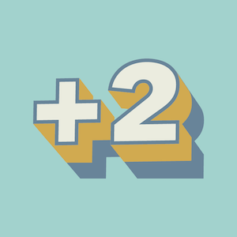
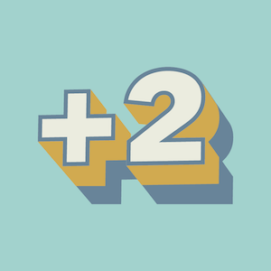

La Plateforme_ est certifiée Qualiopi depuis 2020.Qualiopi atteste de la qualité du processus mis en œuvre par les prestataires d’actions concourant au développement des compétences.

La Plateforme_ est membre de soutient et contribue à des projetsL’April est une association pionnière du logiciel libre en France. Elle démocratise la diffusion du logiciel libre et des standards ouverts auprès du grand public, des professionnels et des institutions.
Cyril Zimmermann
Fondateur de
Denis Philipon
Président du
Serge Magdeleine
Directeur Général du
La Plateforme_ est aussi soutenue par…


 
